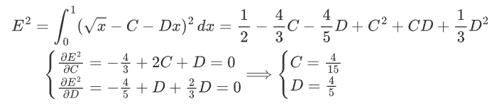
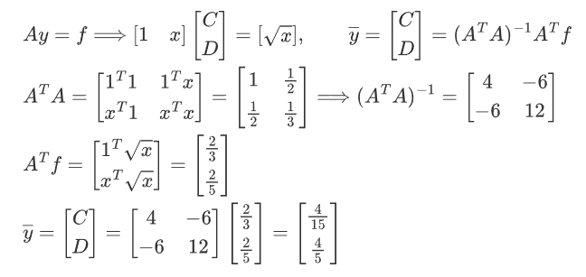
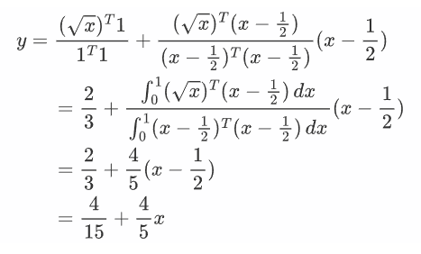

直线拟合与Fourier展开
2021.2.4 写于广州市钦州市
2024.5.2 翻电脑翻出来一个陈年老文档，好像还有点意思……
直线拟合
前言
记录一点关于直线拟合的内容，这部分归于最小二乘里。并不太懂，只能用这样雾里看花的方式写上几句了。从投影矩阵讲到直线拟合，从欧几里得空间演化为希尔伯特空间，从向量到函数，从无关多项式到正交的勒让德多项式……一个根本概念是如何演化的呢？在这个例子中，似乎能窥见一点。
直线拟合是什么呢？
从最初纯粹的数学角度看待，便是让一堆平方和最小。平方和是什么？我有的值到标准值的距离，也就是误差。误差怎么最小呢？求个导。当然，我们已经事先知道了一点东西，比如这个式子必定是正的，这很好解释：平方和必定是正的，所以误差最小也只能小到0。至于如何搞出一个最小值便是数学技巧上的东西了，我们也只是将它看作一个技术问题来解决。
但是从矩阵的角度看，代数上的认识就附加了几何含义。这是一个从欧几里得空间向希尔伯特空间的拓展——将基向量都变成函数了。那么，任何一个函数不都能被一组基表示么？于是也就找到了直线拟合的几何意义：这个函数在${1,x}$这最基本的两个基函数上的投影。这两个函数形成了一个二维平面，那么投影矩阵也就是个$2\times 2$矩阵了，将其他不在这个平面上的函数通通投影到这个二维平面，也就是他的解空间（列向量生成空间）上。
在此基础之上还可以进行正交化。将许米正交应用于基函数，就成了勒让德多项式了。当然，这个正交化既然是基于内积的，在希尔伯特空间就要入乡随俗考虑积分，有了积分就要考虑积分上下限。这里的上下限由题目给出了：0和1。有了一组正交基后，向量的投影便也变得简单了起来：就是它在每个基向量的投影的和，我就可以把每个基向量拎出来算投影数。这里只有两个向量，那算出来的两个投影数自然就是直线的两个系数C和D了。
观察到题解过程渐渐改变了模样。从求导——最经典的算误差方法；到投影矩阵$\overline x=(A^TA)^{-1}A^Tb$，显而易见的几何角度；到几何与代数重新结合，倒表现出了积分的形式——正交投影。这里Gram矩阵$(A^TA)^{-1}$成了单位阵，也可以写成$\overline x=A^Tb$的样子，不过完全可以摒弃了矩阵的表现形式，采用退化的向量形式，把基向量一个一个写出来，用$b_i=\frac{a_i^Tb}{a_i^Ta_i}$直截了当地求系数。
这就成了微分到矩阵，矩阵到积分的过程。实际上讲的却都是一个东西，而拟合的追寻也只能止于追寻，永远不能到达。故而有从“看山是山”，到“看山不是山”，再度回到“看山又是山”一说。
题解
例子：设$f(x)=\sqrt{x}, 0\leq x \leq 1$，现要求拟合为区间内的一条直线。
法一：求偏导
法二：最小二乘
这个思路就是最小二乘法的思路。注意，在Hilbert空间里，向量以函数的形式存在，故而向量内积即函数乘积在区间内的连续积分。由于${1，x}$这一组向量是无关的（在0到1的区间内积分不为0），所以函数可以做在这一组基向量上的投影。直线拟合，本身就是找在解空间内的，和原函数最像的函数自然就是投影了。
那么很简单，投影由两个基向量组成，自然有两个常系数，就是我们所求的$y=C+Dx$中的C和D了。
法三：标准正交基求投影数
这一部分的根本思路与法二是相似的。
这两种方法都是在Hilbert空间里的函数的投影，而其基是由题设条件给出的：一次直线，所以是${1，x}$。不同的地方在于，法三在进行投影之前，先将基正交化了。众所周知，任何一个向量在一组正交基上的投影，是它在每一个基向量上的投影之和。
那么我们只需要干两步：正交化${1，x}$，再求投影。
正交化很简单，但需要注意区间$[0,1]$。在这个区间上求得，与1的乘积的积分为零的函数为$x-\frac{1}{2}$，那么现在的正交基就是${1，x-\frac{1}{2}}$了（一组简单的勒让德多项式）。然后直接投影。在每个基向量的投影都是向一维空间，也就是一条直线的投影，那么投影矩阵可以退化成为向量内积。
\begin{align}
&E^2=\int_{0}^{1}(\sqrt{x}-C-Dx)^2\, dx=\frac{1}{2}-\frac{4}{3}C-\frac{4}{5}D+C^2+CD+\frac{1}{3}D^2\\
&\qquad \begin{cases}
\frac{\partial E^2}{\partial C}=-\frac{4}{3}+2C+D=0\\
\frac{\partial E^2}{\partial D}=-\frac{4}{5}+D+\frac{2}{3}D=0\\
\end{cases}
\Longrightarrow
\begin{cases}
C=\frac{4}{15}\\
D=\frac{4}{5}\\
\end{cases}
\end{align}
\begin{align}
&Ay=f \Longrightarrow
\left[\begin{matrix}
1&x
\end{matrix}\right]
\left[\begin{matrix}
C\\D
\end{matrix}\right]=
\left[\begin{matrix}
\sqrt{x}
\end{matrix}\right]
,\qquad \overline{y}=
\left[\begin{matrix}
C\\D
\end{matrix}\right]=
(A^{T}A)^{-1}A^{T}f\\
&A^{T}A=\left[\begin{matrix}
1^{T}1&1^{T}x\\
x^{T}1&x^{T}x\\
\end{matrix}\right]=
\left[\begin{matrix}
1&\frac{1}{2}\\
\frac{1}{2}&\frac{1}{3}\\
\end{matrix}\right]
\Longrightarrow
(A^{T}A)^{-1}=
\left[\begin{matrix}
4&-6\\
-6&12
\end{matrix}\right]\\
&A^{T}f=\left[\begin{matrix}
1^{T}\sqrt{x}\\
x^{T}\sqrt{x}
\end{matrix}\right]=
\left[\begin{matrix}
\frac{2}{3}\\
\frac{2}{5}
\end{matrix}\right]\\
&\overline{y}=
\left[\begin{matrix}
C\\D
\end{matrix}\right]=
\left[\begin{matrix}
4&-6\\
-6&12
\end{matrix}\right]
\left[\begin{matrix}
\frac{2}{3}\\
\frac{2}{5}
\end{matrix}\right]=
\left[\begin{matrix}
\frac{4}{15}\\
\frac{4}{5}
\end{matrix}\right]
\end{align}
\begin{align}
&y=\frac{(\sqrt{x})^T 1}{1^T 1}+
\frac{(\sqrt{x})^T(x-\frac{1}{2})}{(x-\frac{1}{2})^T(x-\frac{1}{2})}(x-\frac{1}{2})\\
&\qquad=\frac{2}{3}+
\frac{\int_{0}^{1} (\sqrt{x})^T(x-\frac{1}{2})\, dx}
{\int_{0}^{1} (x-\frac{1}{2})^T(x-\frac{1}{2})\, dx}
(x-\frac{1}{2})\\
&\qquad=\frac{2}{3}+\frac{4}{5}(x-\frac{1}{2})\\
&\qquad=\frac{4}{15}+\frac{4}{5}x
\end{align}